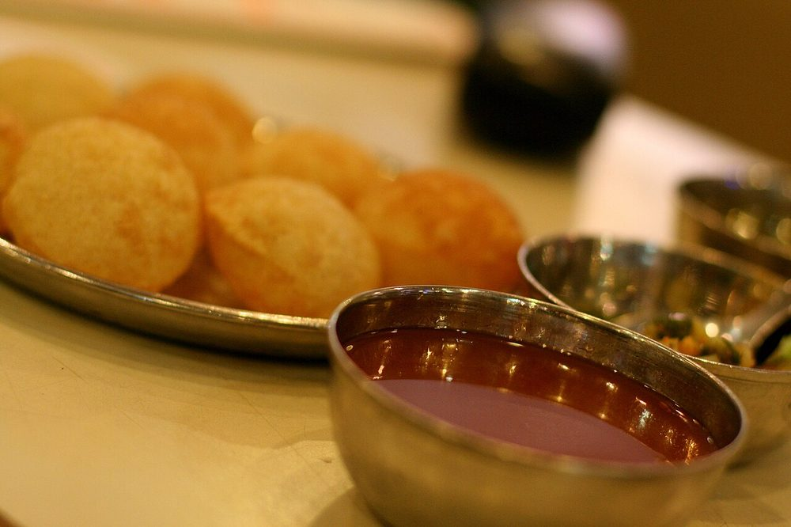

Pani Puri / Golgappa
hollow crisp shells filled with spiced mint water and drunk whole

Contains: gluten
Ingredients
Quantities for 4.
- 150g Rava
- 3 tbsp Maida
- a very large handful Mintthe pani is mostly mint, so be generous
- a large handful Coriander Leaves
- 3 Green Chilli
- 2cm piece Ginger
- 4 tbsp extract Tamarind
- 2 tsp Black Saltthe flavour that makes pani taste like pani
- 2 tsp, roasted Cumin Powder
- 1 tsp Chaat Masala
- 200g, boiled and crushed Potato
- 150g, cooked Chickpeasoptional
- 500ml Neutral Oilfor deep frying
- to taste Salt
Cookware
stovetop, kadhai, blender
Checked against the ingredient list for ten allergens: milk, egg, fish, crustaceans, tree nuts, peanuts, sesame, mustard, soy and gluten. Brands vary, so read the label on anything new to you.
Before you start
- Two things decide whether the shells puff: the dough must be stiff and rested, and the oil must be genuinely hot.
- Make the pani hours ahead and chill it hard. Warm pani is unpleasant and the flavours have not married.
Method
- Knead a stiff dough from rava, maida, salt and just enough water. Cover with a damp cloth and rest 30 minutes.Stiff. A soft dough gives flat, oily discs.
- Blend the mint, coriander, chilli and ginger with a little water to a fine paste.
- Stir the paste into 1.2 litres cold water with the tamarind, black salt, roasted cumin, chaat masala and salt. Chill at least 2 hours.Taste it cold. Chilling flattens salt, so it needs more than seems right when warm.
- Roll the dough very thin and cut small discs, keeping them under a cloth so they do not dry.
- Fry a few at a time at 190C, holding each under with a slotted spoon until it balloons, then turning to crisp.If they are not puffing, the oil is too cool or the dough too thick.
- Drain and cool completely. They must be bone dry to stay crisp.
- At the table, crack a hole in each shell, add potato and chana, fill with cold pani and eat whole, immediately.
Storage
Shells keep two weeks in an airtight tin. The pani keeps 3 days refrigerated and improves overnight. Never store them together.
Nutrition Medium estimate
Medium protein: 16 g a serving, 11% of the calories
| Per serving178 g | Per 100 g | |
|---|---|---|
| Calories | 557 kcal | 313 kcal |
| Protein | 15.6 g | 9 g |
| Carbohydrate | 79.4 g | 44 g |
| of which sugars | 10.5 g | 6 g |
| Fibre | 8.7 g | 5 g |
| Fat | 20.8 g | 12 g |
| of which saturated | 2.2 g | 1 g |
| of which unsaturated | 17.1 g | 10 g |
Ingredients given to taste count as zero, so the real figures run a little higher. Nearest database match used for black salt, chaat masala. Estimated from raw ingredients using USDA FoodData Central.
More like this: Vegan Indian recipes · Vegetarian Indian recipes · Dairy-free Indian recipes · Maharashtrian recipes
Times, yields, allergens and nutrition are guidance. Use your own judgement on doneness and on storing. More in About.